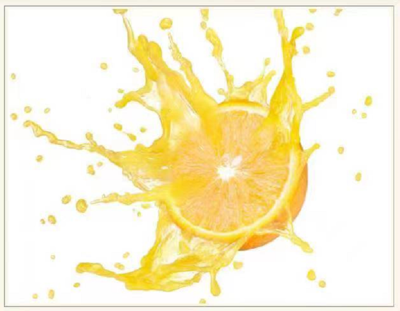

柑襁类水果是水果第一大家族，包括橙子、橘子、柚子、葡萄柚、金欃、柠横等多个品种。其中橙子传统上被看作是西方搭食当中维生素C的主要供应来源，也能提供相当数量的胡萝卜素和钾、钙:铁等矿物质。
柑襦类水果能够步氟化，强化免烧系统。制肿春细跑生长，并使肿瘤细胞转变成正常细魄。澳大利亚的科学家称，在所有的水果当中，柑橘类中所含的抗氧化物质最高，其中有170种以上的植物化学物质，包括60多种黄酮类物质，还有17种类胡萝卜素。苗酮类物质具有抗炎症、抗肿魔．强化血答和胁制疑血的作用，类B挪卜羁则具有很强的抗国化功效。这丝绩合的牛理活性成分使得柑桶关水果对多种癌症的发生具有抑制作用。
实际上，柑桶类水果并不是每一种营养素含量都非常高。若论钾、换、铁等矿物质含星和维生素C的含量，比不上鲜枣9若论黄配类彻质的含量，比不上山楂;若论类期萝卜素的含曼比不上木瓜和芒果。然而，柑福类水果产量丰富、价格便宜、四季可食，在搭食中的营养意义变到人们更多的重视。柑榻类水果的营养共性很强。价格高的、进口的品种共不就比价梓偎窗的国产品种营养更好。
柑福类水果的果皮里含有大量果胶;其中的芳香油有开胃效果，椐期皮中含有大量腊食纤维，福络有止咳化痰的效果。然而，这并不意味若没有咳蒯痰多和食的不振问题的人也非要衔橘支和梧络。
柑福类水果也不宜过多食用。只有在营养平衡的基础上，各种食物对健康的促进效果才能充分体现出来。不能因为本来爱吃橙子，因为馆求营养更是每天都吃上几斤，那祥容易患上橘安病",使人皮肤发黄。空腹吃大量柑橘类水果还会对胃产生刺激作用。
最后需要注意的问题是:如果仅仅喝橙十，橙子的保健效果就会入打折扣。因为在加工橙汁过程中，维生素C、黄酮类物质和类慷萝卜素损失很多，而果胶以外的其他膳食纤维几乎就全部损失了。
品种
监于橙子的商业化程鹿比鼓高，于是在市场的需求下驱生了很多各具特色的静培种，像是填补节场空白期的晚熟复槿（奋奈夏橙、奥灵达）)，利于群食的无核檀（冰糖橙、红红)等。许多橙子的种类是以产地命名的(如中国新会橙)，一些橙种甚至已近注册了商标(如美国香吉士)。格子在人类长期栽培过程产生过一些变异种，某些支异种因对人类有利而被保留下来。该种也常与其他柑橘类植物杂交以产生更加优良的品种，有时柑橘类植物的栽培品种中也会含有橙字，但实际上不属于该种。
营养成分